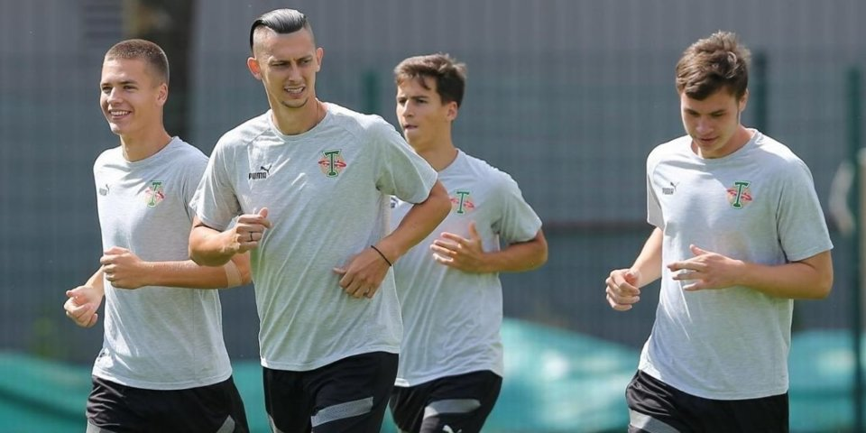
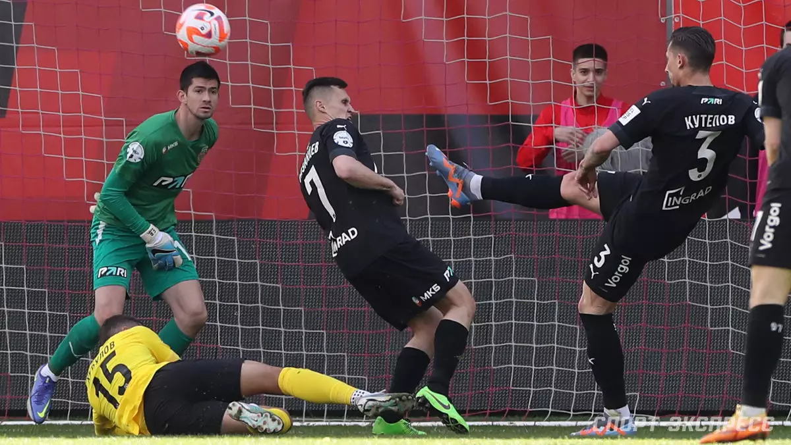
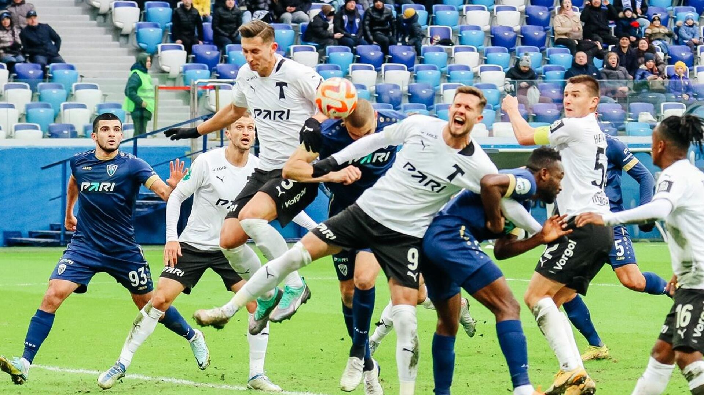
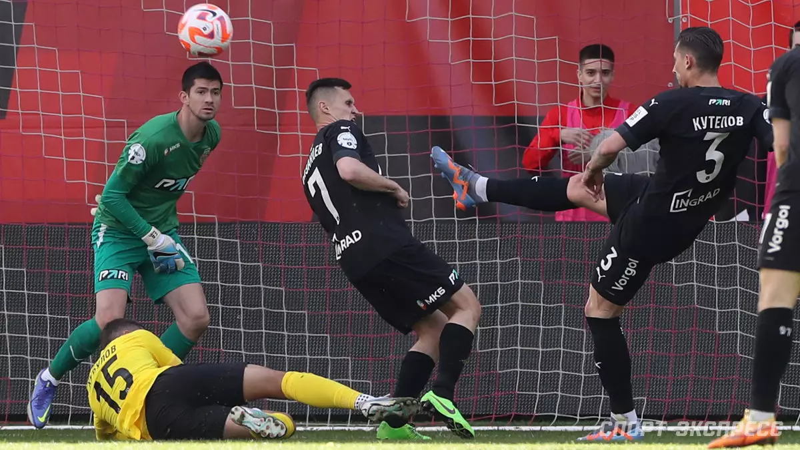
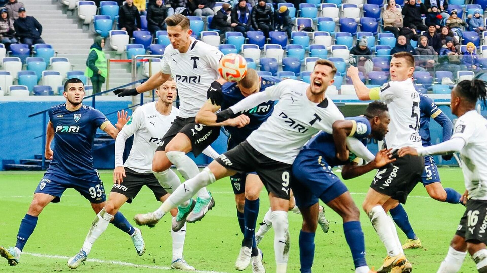
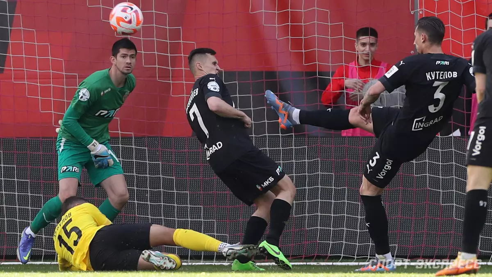
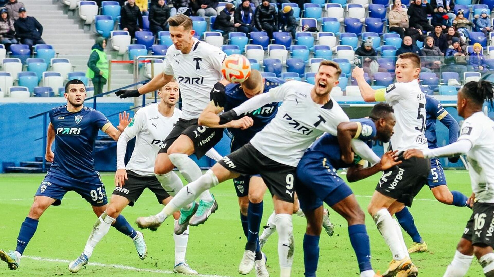

Торпедо Москва Основан: 1924 году

 





«Торпедо» является обладателем 10 трофеев: Чемпион СССР (1960, 1965, 1976) Кубка СССР(1949, 1952, 1960, 1968, 1972, 1986) Кубка России(1993).
Главный тренер:
КлотетЖозеп